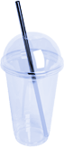
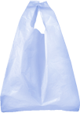

먼 훗날 우리의 후손은 현재를 어떤 시대라고 부를까.
아마도 ‘플라스틱시대’일 것이다. 플라스틱은 뛰어난 내구성과 무엇으로도 변할 수 있는 가변성으로 발명 즉시 ‘기적의 소재’가 됐다. 오늘날 우리가 쓰는 식기, 가전제품, 의류, 화장품까지 상상할 수 있는 거의 모든 물건에 플라스틱이 들어간다.
‘오늘 몇 개의 플라스틱을 사용했습니까’ 이 질문에 답하기가 어려울 정도로 습관적으로 혹은 의식적으로 우리는 매일 플라스틱을 사용한다.
탄소 발자국이란 개념이 있다. 이는 개인 또는 단체가 직접 간접적으로 발생시키는 온실 기체의 총량을 의미한다. 대기로 방출된 이산화탄소 등 온실가스 물질이 지구의 기후변화에 미치는 영향을 알 수 있는 지표이다.
이쯤에서 궁금해진다. 나는 일상속에서 얼만큼의 플라스틱을 사용했을까? 내가 사용한 플라스틱 중 얼마나 많은 양이 대기중이나 해양으로 유출됐을까. 내가 지구에 남긴 탄소발자국은 몇 kg일까.
이 질문에 대답을 하기 위해 작은 테스트를 준비해봤다. 아주 정밀한 수준은 아니더라도 나의 평범한 일상이 지구에 미치는 영향을 간략하게 파악하기에는 충분할 것이다.
내가 남긴 탄소발자국 알아보기
지난 일주일 동안 내가 사용한 물건을 선택해 개수를 입력해주세요.
기억이 안나셔도 괜찮아요. 시험을 보는 것이 아니니 편하게 기억이 나는대로 골라주세요.
-

일회용컵
1개
+ -선택 취소 × -

비닐봉지
1개
+ -선택 취소 × -
페트병
1개
+ -선택 취소 × -

배달용기
1개
+ -선택 취소 ×
선택 완료 후 결과보기 버튼을 눌러주시면 결과를 보여드립니다.
테스트 결과
1
내가 사용한 플라스틱 무게
당신은 일주일 동안 348g의 플라스틱을, 1년 동안은 18.09kg*의 플라스틱을 사용했다.
이는 한국인 전체 평균보다 많은 수치다. 한국인은 1인당 연간 11.8kg의 플라스틱을 사용한다.
* 주간 소비량을 52주로 곱한 값
나
한국평균
나
한국평균
2
내가 남긴 탄소발자국
당신은 일주일 동안 대기중으로 630gCO2e를, 1년 동안은 30.27kgCO2e*의 탄소발자국을 배출했다.
이는 비행기를 타고 1km를 운항했을 때 배출량**과 동일하다. 차에 비유하면 자동차로 1km를 주행했을 때 배출량***이다.
한국인 전체 평균보다는 많은 수치다. 각 플라스틱 제품에 자주 쓰이는 소재를 기준으로 한국인은 1인당 매년 23.146㎏의 탄소발자국을 배출한다.
* 주간 소비량을 52주로 곱한 값
** 출처: 유럽환경청, 승객 1명 기준.
*** 출처: 그린피스 <무너지는 기후: 자동차 산업이 불러온 위기>, 현대·기아차 기준.
나
한국평균
나
한국평균
한국인이 남기는 탄소 발자국은 어느정도 일까? 2018년 기준 한국인은 연간 325.5억개의 플라스틱을 소비한다. 1인당 연간 소비량은 637.7개, 11.8㎏다.
이는 매우 보수적으로 계산된 값으로 플라스틱빨대, 스티로폼용기, 유색PET병, 탄산음료PET, 우유 용기 등은 제외된 수치다. 이 수치를 기준으로 탄소발자국을 계산하면 23.146㎏다.
국내 플라스틱 생산량과 소비량
5344000
5344000
5344000
5344000
5344000
5344000
5344000
5344000
5344000
5344000
5344000
5344000
5344000
5344000
5344000
5344000
단위: 만톤
출처: KEI <순환경제로의 전환을 위한 플라스틱 관리전략 연구>
2019년에 발간된 보고서에 따르면 국내플라스틱 생산량은 2011부터 2018년까지 지속적으로 연평균 2.2%씩 증가하였고, 2017년 사상 최고치인 1,406만 톤을 기록했다. 이 중 과반 수 이상이 해외로 수출되고 적은 양이 수입된다.
플라스틱 국내수요량은 2017년 기준 660만 톤이며, 2011년부터 2018년까지 연평균 2.5%씩 증가하였다.
미래 국내 플라스틱 생산량 및 국내수요량을 예측하기 위해 과거추세 연장법으로 추정했을 때, 현재의 추세가 이어질 경우 2030년에는 국내 플라스틱 생산량이 1,740만 톤으로 증가할 것으로 전망된다.
이 밖의 더 많은 이야기를 아래 기사에서 확인해보실 수 있다.
테스트에서 사용된 탄소발자국은 각 플라스틱 제품에 자주 쓰이는 소재를 기준으로 계산되었습니다.
- 자료출처 환경산업기술원 - <플라스틱 종류별 단위질량당 탄소배출량>, KEI - <순환경제로의 전환을 위한 플라스틱 관리전략 연구>